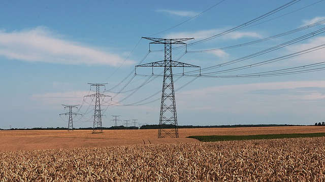

¿Transportar la electricidad...?
Bueno, podemos hablar de transportar o conducir... ¡Para eso están los conductores! Eléctricos, por supuesto. La energía eléctrica que se produce en las centrales llega a los puntos de consumo a través de los cables conductores de la corriente.
A la salida de las centrales eléctricas se eleva la tensión o voltage para transportar la energía a grandes distancias, mientras que al llegar a los puntos de consumo se reduce a baja tensión.
Pero, ¿por qué tanta subida y bajada de tensión...?

Las bajas tensiones son necesarias para el funcionamiento de las máquinas eléctricas y para evitar riesgos en la población: normalmente usamos 220 V en viviendas y oficinas. La alta tensión, en cambio, tiene sentido para poder disminuir la intensidad y evitar pérdidas por calentamiento de los cables: es el efecto Joule .
Potencia transportada
Tensión en transporte, intensidad en la distribución
Como recordarás del tema de circuitos eléctricos, la potencia eléctrica que se transporta depende de dos factores: la intensidad (I) y la tensión o voltaje (V), de tal manera que valor de esa potencia viene dado por la expresión:
P = V · I
Cuanto menor sea la intensidad menos pérdidas por efecto Joule tendremos durante el transporte. Esto es así porque los cables, por muy buenos conductores que sean, siempre tienen una pequeña resistencia que convierte parte de la energía eléctrica en calor, que se disipa a la atmósfera y que no llegaría a los puntos de consumo. Puedes observar en la expresión que permite su cálculo que estas pérdidas son mayores cuanto mayor sea el cuadrado esta intensidad:
Pperdida = R · I2
Es por esto que, después de generar la corriente en la central, los transformadores elevan su tensión para poder reducir su intensidad, con el consiguiente ahorro energético y económico.
Sistema de transporte de energía eléctrica
Imagen de PACO-commonswiki en Wikimedia Commons. Licencia CC.

En el siguiente vídeo puedes ver una animación sobre el sistema de generación, transporte y distribución de la energía eléctrica, ¡no te lo pierdas!
Cantidad de energía eléctrica por segundo que suministra un conductor eléctrico. Se mide en vatios (W), equivalente a un julio por segundo (J/s), en el sistema internacional de unidades.
Fenómeno irreversible por el cual, si en un conductor circula corriente eléctrica, parte de la energía cinética de los electrones se transforma en calor debido a los choques que sufren con los átomos del material conductor por el que circulan, elevando la temperatura del mismo.